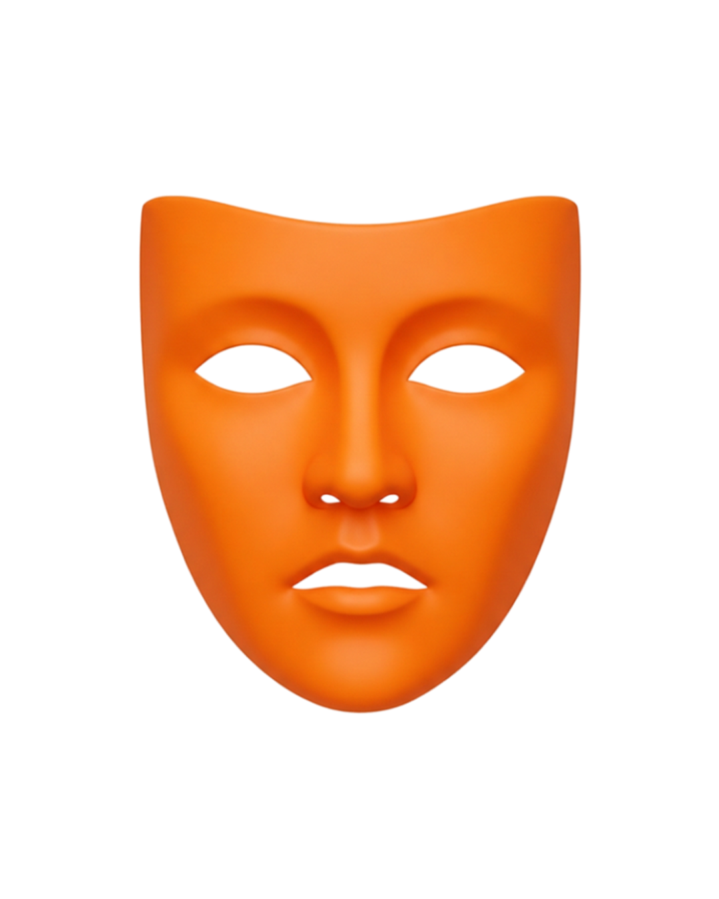

Les 7 masques · La peur de la douleur émotionnelle
On vous demande ce que vous ressentez — et la réponse ne vient pas. Pas par froideur : par protection. Quelque part, ressentir pleinement est devenu trop coûteux. Cette coupure a un nom, une histoire — et une sortie.

alexithymie · ne rien ressentir · vide émotionnel · couper ses émotions
Ceci est le Masque Orange — l'un des 7 masques de la méthode V.A.L.E.U.R© créée par Céline Bourbon, psychologue. Découvrir la méthode →
Vous reconnaissez-vous ?
« Même si ça ne se voit pas forcément, je ressens très fort les émotions — alors je coupe pour ne pas souffrir. »
Dans votre quotidien, ça ressemble à rester constamment occupé·e, à esquiver les conversations trop intimes, à ne pas vraiment savoir ce que vous ressentez.
« Je comprends tout ce que je ressens. Je le vis moins. »
Ce que personne ne voit
Un masque n'est jamais une étiquette figée. C'est un conflit intérieur — entre une sensibilité profonde et une défense qui la protège. Si vous ne vous reconnaissez pas toujours dans une seule description, c'est normal : vous vivez les deux pôles, en alternance.
« Je peux traverser de longues périodes sans rien ressentir, comme à distance de moi-même — puis être submergé·e par des émotions que je ne comprends pas et qui débordent d'un coup. »
Le Masque Orange ne supprime pas l'émotion : il oscille entre une sensibilité débordante et une coupure protectrice. Vous n'êtes ni l'un ni l'autre en permanence — vous vivez le va-et-vient entre les deux.
D'où vient cette peur
Aucun masque ne naît par hasard. Tout commence dans l'enfance, à un moment où l'on avait un besoin fondamental — être vu, aimé, soutenu, en sécurité. Puis quelque chose s'est produit. Pas nécessairement un grand drame : une expérience suffisamment douloureuse, parfois répétée, pour que le système nerveux la grave comme « dangereuse ».
La peur au quotidien
Avant même que vous ayez le temps de décider, ces pensées arrivent — si vite que vous les croyez vôtres :
Pourquoi ça ne s'arrête pas tout seul
Si la volonté suffisait, vous auriez arrêté depuis longtemps. Voici pourquoi elle ne suffit pas — le cycle exact que ce masque rejoue, et qui le rend plus fort à chaque tour :
Ce n'est pas un manque de volonté. C'est une boucle — et une boucle, ça se comprend, puis ça se défait.
Ce que la recherche en dit
La recherche étudie ce mécanisme sous les noms d'alexithymie (la difficulté à identifier et exprimer ses émotions), d'évitement émotionnel, d'émoussement affectif, d'anhédonie (la difficulté à ressentir le plaisir) ou de sentiment de vide intérieur. Les travaux de Hayes sur l'évitement expérientiel ont montré que fuir ses émotions les renforce ; ceux de Gross, que la suppression émotionnelle épuise ; et Eisenberger a démontré que la douleur émotionnelle active les mêmes zones cérébrales que la douleur physique — votre système ne « dramatise » pas : il protège contre une douleur réelle. À la racine : l'algophobie, la peur de souffrir.
Vos proches vous trouvent présent·e — et parfois difficile à vraiment atteindre. Non par manque d'envie, mais parce que l'accès à ce qui vous touche vraiment s'est verrouillé si progressivement que vous ne l'avez pas remarqué. Vous regardez votre vie depuis une légère distance. Vous comprenez tout — mais vous ne vivez pas tout entièrement.
Celui qui fuit le plus intensément la souffrance émotionnelle est souvent celui qui ressent le plus profondément. La conjunctio jungienne s’applique ici avec précision : l’évitement n’est pas l’absence de sensibilité — c’est la preuve de son intensité.
Non plus contenir — mais ressentir depuis la force. Quand l’émotion cesse d’être un danger, elle devient le guide le plus précis qui soit.
Une énergie créatrice et une intelligence émotionnelle libérées. L’émotion devient source d’information — non de menace. La vie redevient une expérience, pas une gestion.
Ce travail se mesure : c'est le Score de Présence Authentique, votre pourcentage de liberté d'être soi.
Sentir n’est pas perdre le contrôle. C’est exactement le contraire — c’est reprendre contact avec ce qui guide vraiment.
7 questions · Quelques minutes · Gratuit et confidentiel
Explorer les 7 masques →Explorer les autres masques